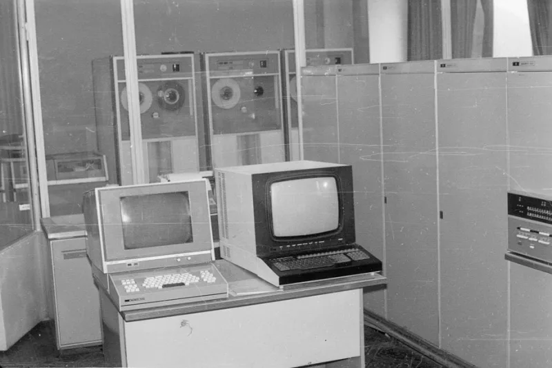
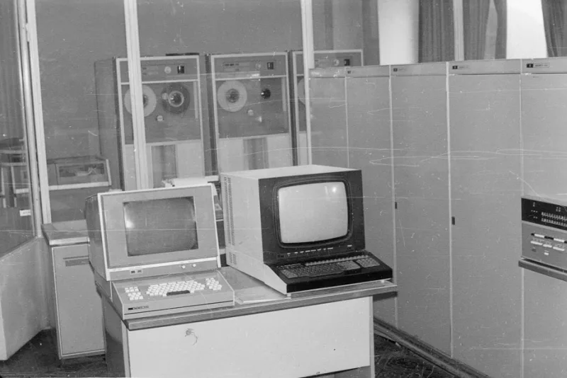

Первые электронные вычислительные машины появились в середине XX века.
Тегspan используется для выделения части текста внутри строки.
ЭВМ — это электронная вычислительная машина.
<h1>История ЭВМ</h1>
Описание поколений ЭВМ
 


Электро́нная вычисли́тельная маши́на (ЭВМ) — комплекс технических, аппаратных и программных средств, предназначенных для автоматической обработки информации, вычислений, автоматического управления.Источник: Википедия
По словам учёных:
развитие вычислительной техники изменило ход истории